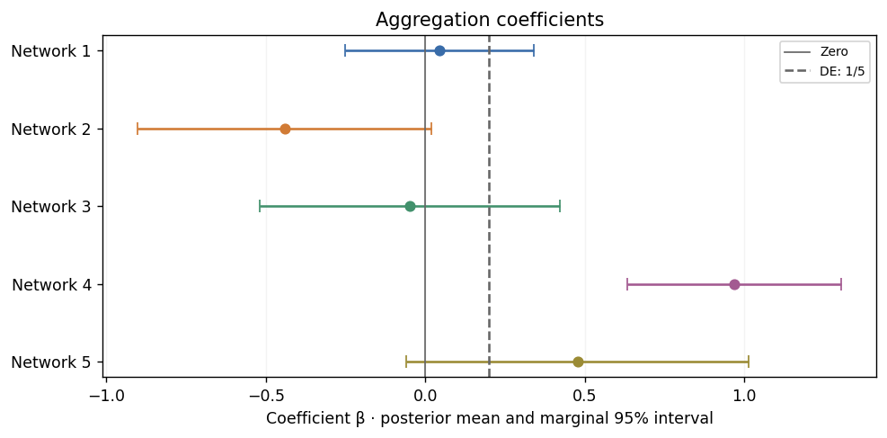
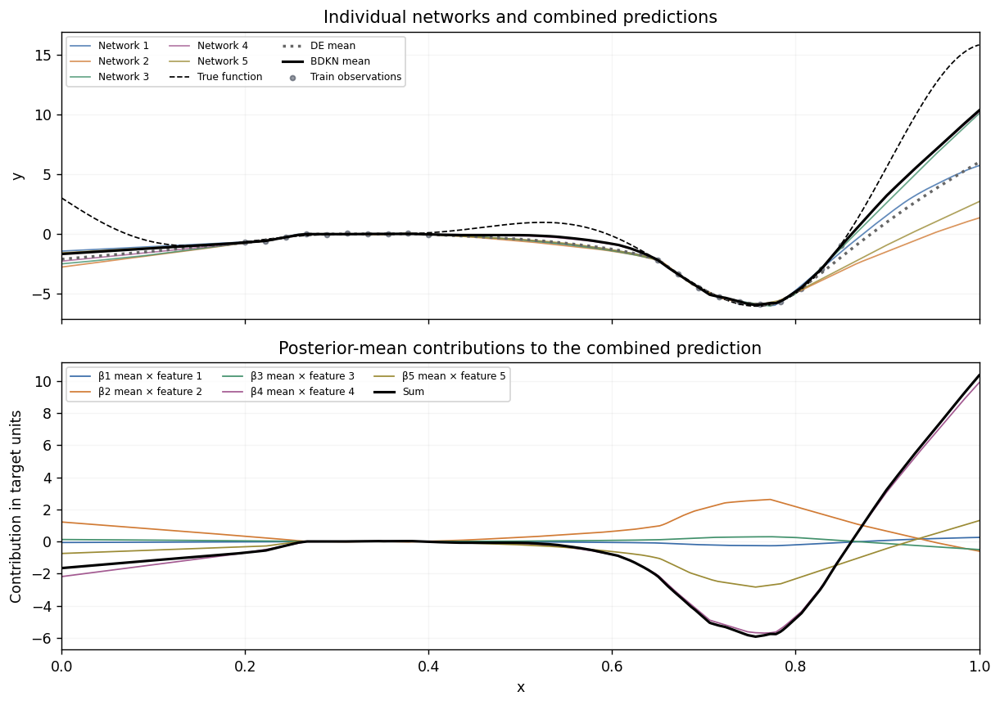
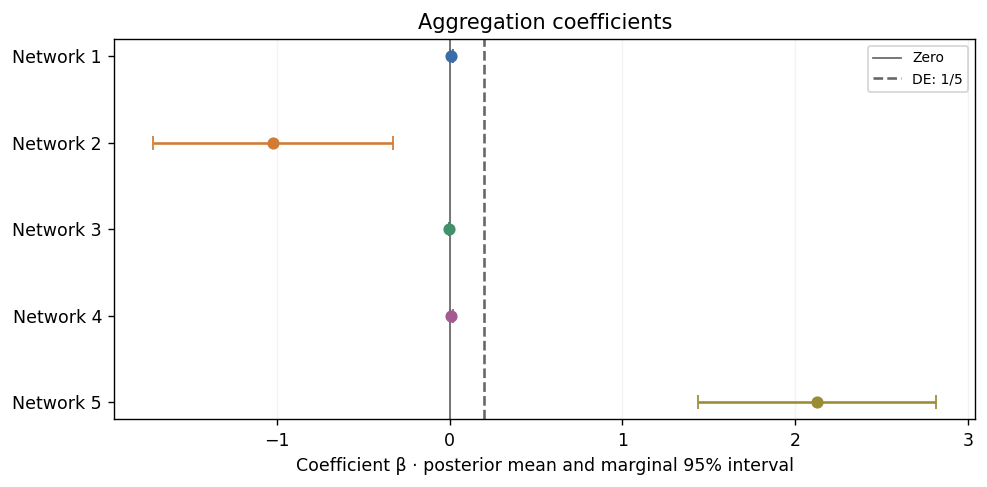
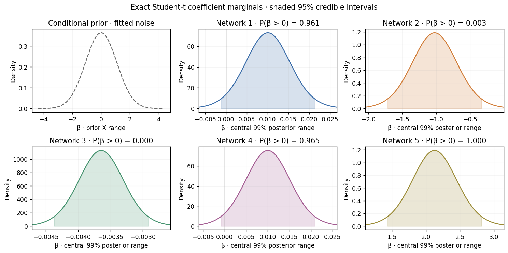
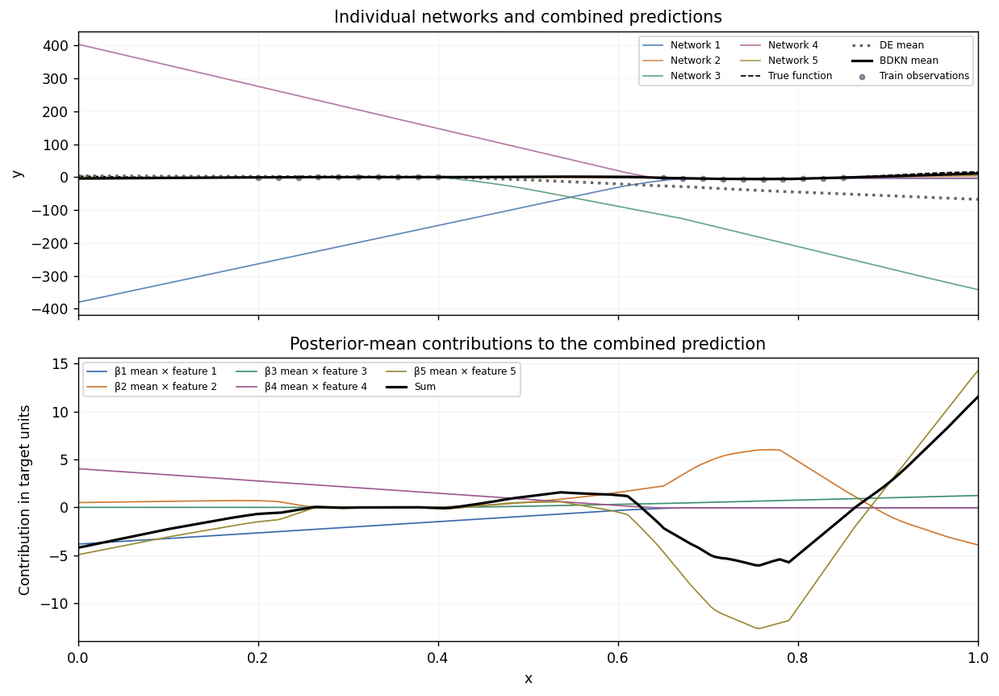
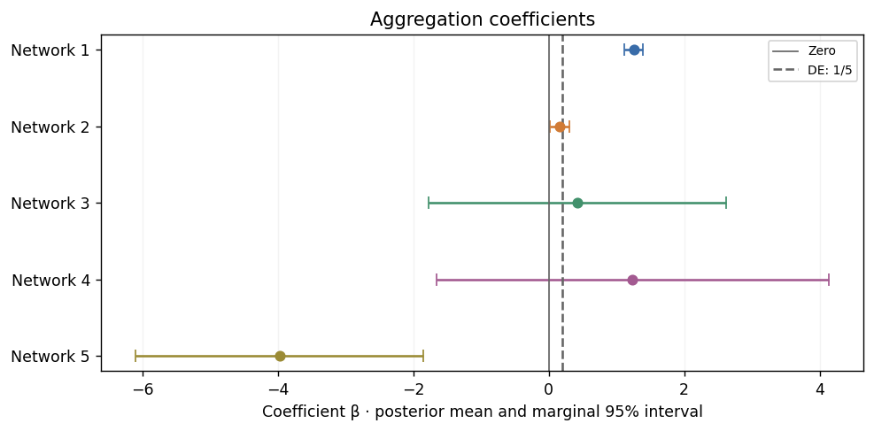
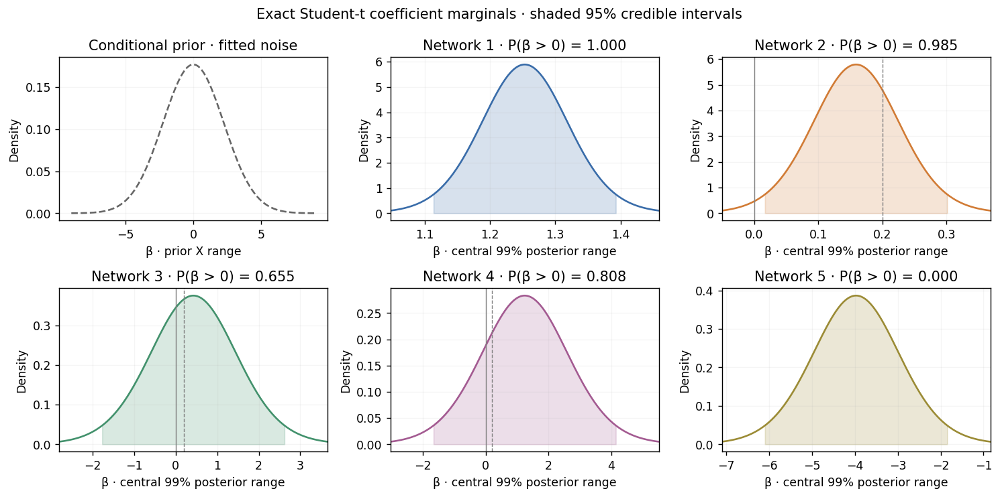
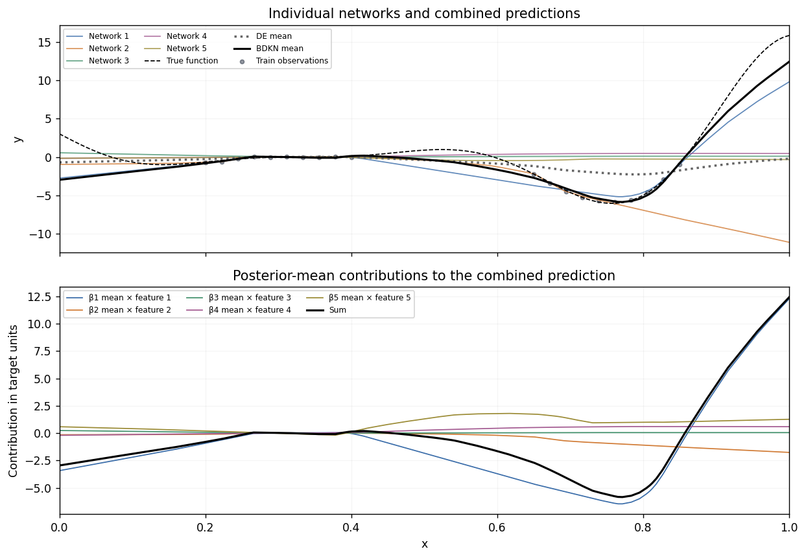

Regression comparison
Download resultsAggregation weights
Coefficients can be negative and need not sum to one. Intervals describe coefficient uncertainty; the dashed reference is DE’s fixed 1/H weight.
BDKN



Each density panel uses its own X range for readability; coefficient intervals above share a common axis. Prior reference conditions on fitted noise. Contribution shares use held-out inputs; test targets are used only for scoring.
| Network | β mean | 95% low | 95% high | P(β > 0) | Contribution share | Test RMSE | Test NLL |
|---|---|---|---|---|---|---|---|
| 1 | 0.04436 | -0.25239 | 0.34112 | 0.62081 | 0.02077 | 2.77758 | 1690.98373 |
| 2 | -0.44101 | -0.90097 | 0.01895 | 0.02963 | 0.20503 | 4.14137 | 2585.39364 |
| 3 | -0.04979 | -0.52027 | 0.42070 | 0.41376 | 0.02849 | 2.11616 | 3948.29119 |
| 4 | 0.96865 | 0.63295 | 1.30434 | 1.00000 | 0.53969 | 1.93914 | 2182.53233 |
| 5 | 0.47701 | -0.05980 | 1.01383 | 0.96070 | 0.20602 | 3.77514 | 19156.44097 |
Functional repulsion · BDKN



Each density panel uses its own X range for readability; coefficient intervals above share a common axis. Prior reference conditions on fitted noise. Contribution shares use held-out inputs; test targets are used only for scoring.
| Network | β mean | 95% low | 95% high | P(β > 0) | Contribution share | Test RMSE | Test NLL |
|---|---|---|---|---|---|---|---|
| 1 | 0.01007 | -0.00120 | 0.02133 | 0.96140 | 0.14760 | 172.19148 | 15.70295 |
| 2 | -1.02337 | -1.71607 | -0.33066 | 0.00294 | 0.19933 | 3.21996 | 1389.03976 |
| 3 | -0.00364 | -0.00437 | -0.00292 | 0.00000 | 0.04402 | 149.89714 | 12.55320 |
| 4 | 0.01002 | -0.00088 | 0.02091 | 0.96526 | 0.15060 | 179.75600 | 13.08542 |
| 5 | 2.12650 | 1.43565 | 2.81736 | 1.00000 | 0.45844 | 2.78832 | 4004.62357 |
Weight repulsion · BDKN


Each density panel uses its own X range for readability; coefficient intervals above share a common axis. Prior reference conditions on fitted noise. Contribution shares use held-out inputs; test targets are used only for scoring.
| Network | β mean | 95% low | 95% high | P(β > 0) | Contribution share | Test RMSE | Test NLL |
|---|---|---|---|---|---|---|---|
| 1 | 0.09773 | -0.06327 | 0.25873 | 0.89001 | 0.07887 | 5.11266 | 4387.25496 |
| 2 | 0.49543 | 0.05205 | 0.93882 | 0.98483 | 0.38268 | 2.68545 | 677.78790 |
| 3 | 0.27486 | -0.22389 | 0.77361 | 0.86806 | 0.18465 | 2.91439 | 130069.84698 |
| 4 | 0.29280 | -0.21708 | 0.80268 | 0.87752 | 0.21807 | 2.12010 | 665.58285 |
| 5 | -0.16014 | -0.61196 | 0.29168 | 0.23415 | 0.13573 | 1.51423 | 86047.22048 |
First-order repulsion · BDKN



Each density panel uses its own X range for readability; coefficient intervals above share a common axis. Prior reference conditions on fitted noise. Contribution shares use held-out inputs; test targets are used only for scoring.
| Network | β mean | 95% low | 95% high | P(β > 0) | Contribution share | Test RMSE | Test NLL |
|---|---|---|---|---|---|---|---|
| 1 | 1.25337 | 1.11389 | 1.39285 | 1.00000 | 0.63999 | 2.29763 | 686818.26862 |
| 2 | 0.15897 | 0.01702 | 0.30092 | 0.98500 | 0.10380 | 7.61685 | 49804.35346 |
| 3 | 0.42452 | -1.76897 | 2.61801 | 0.65464 | 0.01217 | 4.49100 | 2.42188 |
| 4 | 1.23959 | -1.66120 | 4.14038 | 0.80834 | 0.06739 | 4.47057 | 2.27690 |
| 5 | -3.97260 | -6.09795 | -1.84726 | 0.00045 | 0.17666 | 4.54040 | 9.48895 |